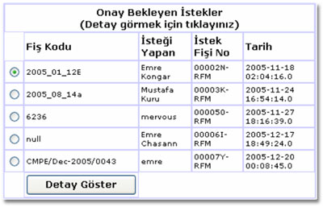
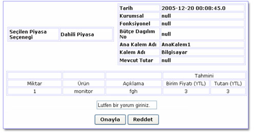

Bölümlerde doldurulan istek fiþleri bölüm baþkanýnýn onayýndan sonra bu sayfaya yönlendirilir. Bunun yanýnda, dekanlýkta doldurulan istek fiþleri de dekan sekreteri tarafýndan onaylandýktan sonra bu sayfaya yönlendirilir. Dekan sisteme girince karþýsýna, onay bekleyen istek fiþleri doldurulma tarihlerine göre sýralanmýþ olarak gelir. Dekan ayrýntýlarýný görmek istediði istek fiþini seçer ve "Detay göster" tuþuna basar ve yeni bir sayfaya yönlendirilir.

Yeni açýlan sayfada istek fiþinin özellikleri ve seçilen bütçenin "Fonksiyonel Kurumsal Kodlarý" ve Mevcut Tutarlarý görüntülenmektedir.
Bölüm baþkanýnýn ayrýntýlarýný gördüðü istek fiþi ile ilgili aþaðýda
belirtilen yetkileri mevcuttur:
Onayla
Dekan'ýn onayladýðý istek fiþi ilgili butce biriminin sekreterine gonderilir.
Reddet
Dekan'ýn reddettiði fiþler Bölüm ya bölüm baþkanýna ya da dekan sekreterine
geri gönderilir. Bu iþlem istek fiþini oluþturanýn "group no"suna
göre yapýlýr.
Tarihçe göster
Dekan istek fiþinin kimlerin onayýndan geçip kendisine geldiðini inceleyip
kararýný bu doðrultuda verebilir.
Dekan ekranýn solundaki menüde bulunan aþaðýdaki iþlemleride gerçekleþtirebilir.
ÝstekTakip
Sekreter durumunu öðrenmek istediði istek fiþinin kodunu girerek ayrýntýlarýný
çðrenebilir.
Ana Menü
Ana menuüye dönmek için kullanýlýr.
Sifre deðiþtir
Kullanýcý þifresi deðiþtirmek için kullanýlýr. Bu iþlemin ayrýntýlarý
için "Þifre deðiþtirme" bölümüne bakýnýz.
Sistemden Çýkýþ
Sistemden çýkmak için kullanýlýr.
